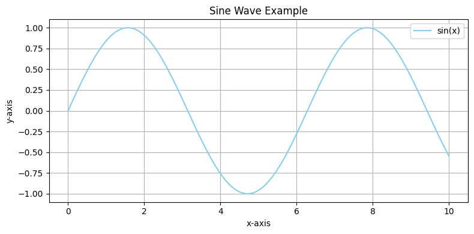

Function Usage Demo#
Show code cell source
import sys
import os
# Get the path to your project root
project_root = os.path.abspath(os.path.join(os.getcwd(), "../../../oxds/oxds"))
sys.path.append(project_root)
The code for this line is meant to be completely hidden from the webpage
from sample_module import greet, square
Explanation#
greet("Oxford Data Plan")
'Hello, Oxford Data Plan!'
square(5)
25
Show code cell source
import matplotlib.pyplot as plt
import numpy as np
x = np.linspace(0, 10, 100)
y = np.sin(x)
plt.figure(figsize=(8, 4))
plt.plot(x, y, label="sin(x)", color="skyblue")
plt.title("Sine Wave Example")
plt.xlabel("x-axis")
plt.ylabel("y-axis")
plt.grid(True)
plt.legend()
plt.tight_layout()
plt.show()

import certifi
os.environ['SSL_CERT_FILE'] = certifi.where()
import seaborn as sns
tips = sns.load_dataset("tips")
sns.boxplot(x="day", y="total_bill", data=tips)
<Axes: xlabel='day', ylabel='total_bill'>
Interactive plot using Plotly#
import plotly.io as pio
pio.renderers.default = 'notebook_connected'
import plotly.express as px
df = px.data.iris()
fig = px.scatter(df, x="sepal_width", y="sepal_length", color="species")
fig.show()